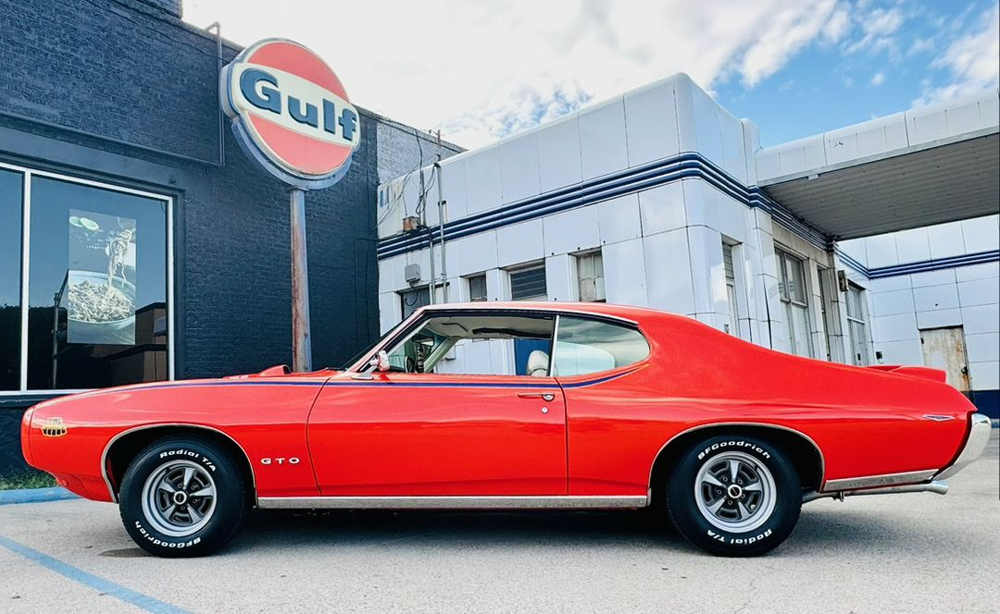
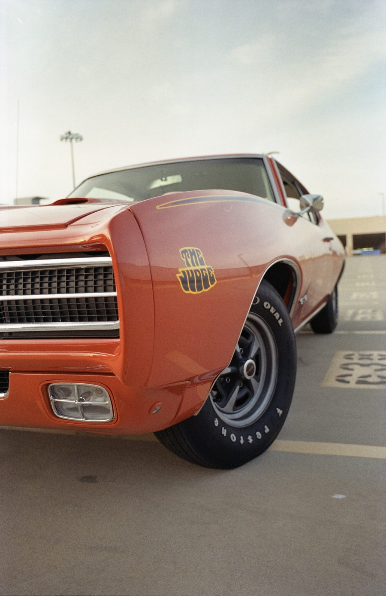

Some people brush off any research that used AI as “just AI.” The collector-car world’s own leaders are taking a closer look.
In 2023, Hagerty tested ChatGPT on classic cars and found it made mistakes. That is exactly why AI answers have to be checked against real documents.
On August 13, 2026, the Petersen Automotive Museum presented a Pebble Beach Classic Car Forum, “AI and Authenticity: Protecting Provenance in the Collector Car World,” moderated by Terry L. Karges with Miles Collier, McKeel Hagerty, Dan Kahn, Ralph Gilles and Paul Russell. It looked at how AI is being used for digital archives and provenance research, and how to use it responsibly.
This is the standard I follow. AI helps with the legwork: organizing, transcribing and searching. It never counts as evidence. Every claim goes back to a primary document, such as a PHS invoice, a broadcast sheet or a cowl tag, and is labeled by how strong its source is under the Evidence Policy. Anything AI-generated is marked as a lead only, until a document backs it up.
Judge the research by its paperwork, not by the tools used to organize it.

This page is part of Al Diaz’s public research site, 1969 Pontiac GTO Judge: The Documented History.